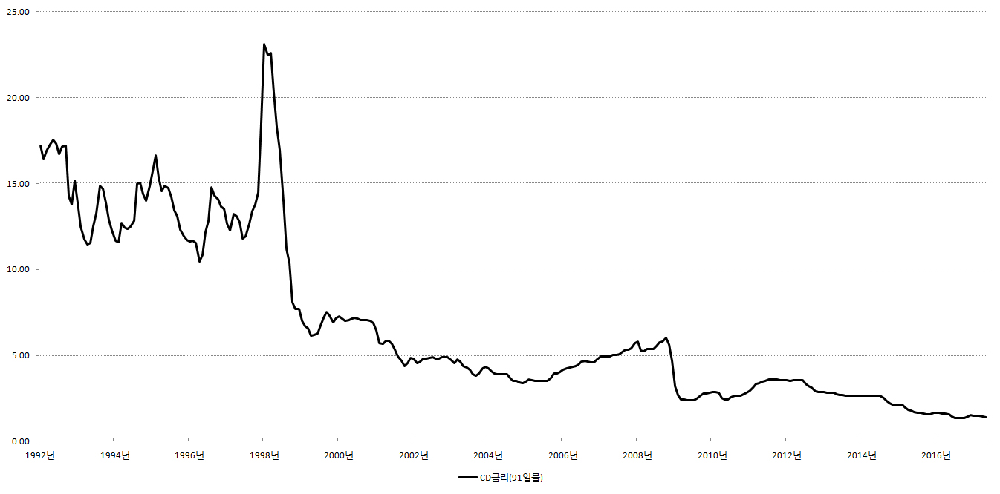

■ CD금리
1.CD(Certificate of Deposit : 양도성예금증서)
CD는 양도성예금‘증서’라는 이름이 상징하듯이 예금을 했다는 증거로 나눠주는 아주 특별한 종이 쪼가리를 말합니다. CD의 모양새는 가지각색인데 기본적으로 적혀 있는 내용은 다음과 같습니다.
‘91일 뒤에 이 쪽지를 가지고 오시면 100만원을 드립니다.’
물론 진짜로 CD 표면에 이렇게 적혀 있는 것은 아닙니다. 아주 예쁜 종이에 깔끔하게 프린트 되어 있습니다.
2.CD금리
보통의 예금은 지금 100만원을 예금하면 나중에 이자를 합쳐서 돌려 줍니다. 그런데 CD는 보통의 예금과 조금 다릅니다. 미리 ‘91일 뒤에 이 쪽지를 가지고 오시면 100만원을 드립니다.’라는 종이쪼가리를 찍어 놓고 사람들에게 판매하는 방식입니다.
만약 우리가 이 종이쪼가리를 95만원에 구입했다면 얼마의 금리를 받은 것이 될까요? 95만원을 투자하고 5만원을 받았으니까 5.2%의 금리를 받은 것이 됩니다. 그런데 우리는 91일동안 돈울 빌려주고 5.2%의 금리를 받았습니다. 따라서 다른 예금이나 펀드, 또는 주식과 비교를 하려면 1년에 얼마가 떨어지는지 계산을 할 필요가 있습니다. 91일, 즉 3개월동안 5.2%의 금리를 받았으니까 대충 계산하면 1년동안 '5.2× 4 = 20.8%'의 금리를 받은 것이 됩니다.
그런데 이런 방식으로 계산하는 것은 문제가 있습니다. 다른 예금과 비교를 하고 싶다면 정확하게 계산 해야합니다.
CD금리의 계산 방법은 다음과 같습니다.
{kind=link}
그런데 CD를 구입하고, 그 때마다 우리에게 떨어지는 금리를 연율로 계산하는 것은 너무나 힘이 듭니다. 하지만 이 과정이 귀찮다고 포기할 수는 없습니다. 비록 91일짜리 쪽지를 샀지만 다른 예금이나 펀드와 비교했을 때 얼마나 영양가 있는 투자인가를 알기 위해서는 1년에 얼마가 떨어지는지를 정확하게 계산 해야합니다. 그래야 하루라도 빨리 우리는 부자가 될 수 있습니다.
그렇지만 일일이 계산하는 것은 사실 너무 빡집니다. 그래서 신문과 방송에서는 친절하게도 91일 뒤에 돈을 주는 CD든, 180일 뒤에 돈을 주는 CD든 상관없이 연율로 계산해서 발표를 해 주고 있습니다. 따라서 우리는 CD를 여러 가지 다른 예금이나 펀드 등과 손 쉽게 비교를 할수 있습니다.
91일물이 어쩌고 저쩌고, 연율이 어쩌고 저쩌고 하는 것이 어렵다면 단순하게 생각하십시오. CD금리는 은행이 양도성예금증서를 발행해서 돈을 빌릴 때 부담해야하는 금리라고 말입니다.
■ CD금리 그래프

{kind=link}
3.CD금리의 의의
■ 조달금리 : 돈 쓸 때가 많은데 사람들이 예금을 하지 않으면 은행은 어디서 돈을 마련해야 할까요? 어쩔수 없습니다. 삼성전자나 현대자동차같은 회사처럼 채권을 발행해서 돈을 빌릴 수밖에 없습니다. 하지만 이름 값으로 먹고 사는 은행이 채권을 발행해서 돈을 빌리면 너무 없어 보입니다. 그래서 은행은 CD를 발행해서 돈을 빌립니다. 양도성‘예금’증서라는 말이 상징하듯이 왠지 돈을 빌리는 것이 아니라 예금을 받는 것처럼 보이기 때문입니다.
따라서 CD금리는 단순한 예금금리가 아니라 은행이 급전을 조달 할 때의 비용, 유식하게 말해서 조달금리의 성격을 띕니다. 그래서 옛날에는 사람들에게 대출을 해줄 때 기준으로 삼는 것이 CD금리 였습니다. 예를 들어 CD금리가 3%라면 대출금리는 ‘CD금리 + 알파’였습니다. 3%의 금리를 주고 돈을 조달한 만큼 약간의 이익을 더해서 대출금리를 결정하는 방식이었습니다.
하지만 요즘은 CD금리의 명성이 옛날처럼 높지는 않습니다. CD금리 조작설 등으로 명예에 치명타를 입었기 때문입니다.
■ CD연동 대출 : 은행이 해주는 대출은 거의 대부분 장기대출입니다. 예를들어 집을 사기위해 우리가 받은 대출을 생각해보십시오. 기본이 10년이고 여차하면 20년, 30년대출입니다.
따라서 3%의 금리를 받고 대출을 해줬는데 5년 뒤에 금리가 30%로 뛰면 큰일이 납니다. 돈을 은행 금고에 모셔 두었다가 그 때가서 대출을 했으면 30%의 금리를 받을 수 있었는데 이미 3%의 금리를 받고 대출을 해 준 바람에 30년동안 줄기차게 3%의 금리를 받을 수 밖에 없습니다.
그래서 생각해낸 것이 바로 CD금리 연동대출입니다. 대출금리가 3%, 또는 4%로 딱 고정되어 있는 것이 아니라 CD금리가 변하면 대출금리도 그에 따라서 바뀌는 것을 CD연동 대출이라고 합니다.
쉽게 말해서 'CD금리 + 1%'의 조건으로 대출을 받았는데 지금 현재 CD금리가 5%라면 5% + 1% = 6%의 이자를 납부해야 합니다. 그리고 시간이 흘러 어느 순간 CD금리가 1%로 낮아졌다면 이제는 1% + 1% = 2%의 이자만 납부하면 됩니다.
4.CD금리 추이를 조회할 수 있는 사이트
■ 한국은행 : 한국은행 경제통계시스템 → 4.금리 → 4.1 시장금리 → 4.1.1 CD(91일)